Ginga Prism typography
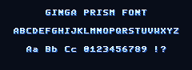
GINGA KORO · ART REFERENCE
Explore the lettering, interface and sprites that appear across the game.

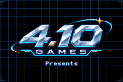
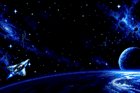
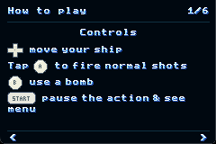
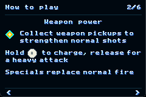
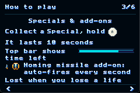
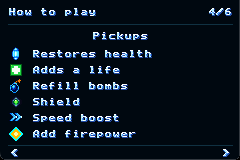
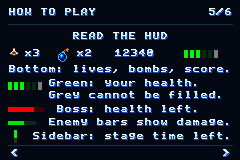
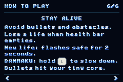
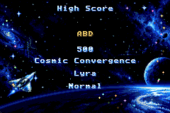
Classic preset

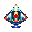
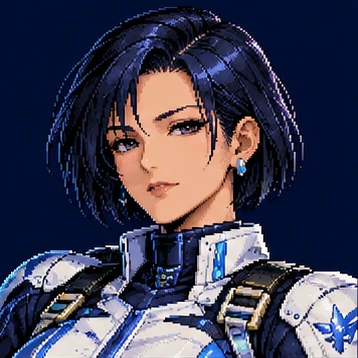
Preset values · Normal difficulty
Classic preset
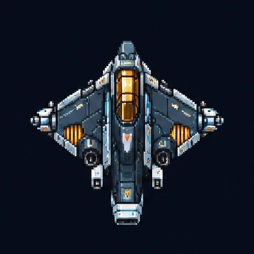
Preset values · Normal difficulty
Classic preset

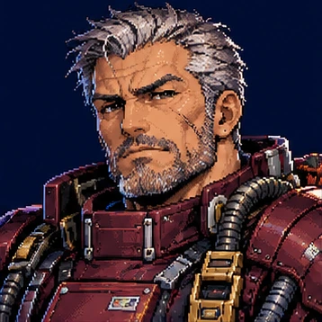
Preset values · Normal difficulty
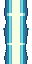
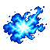
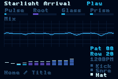
A 4.10 Games project
Ginga Koro is an independent work in progress.